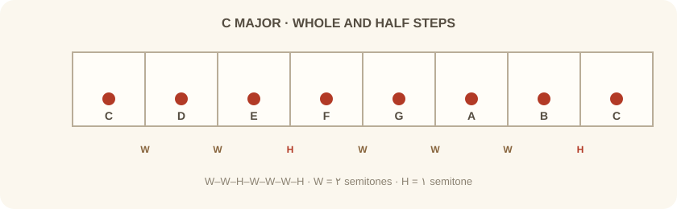
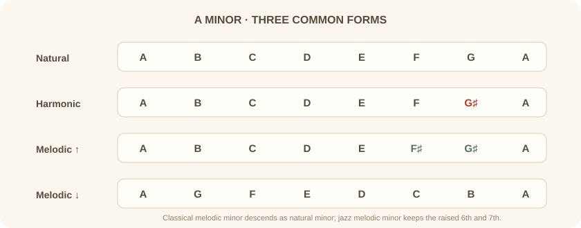
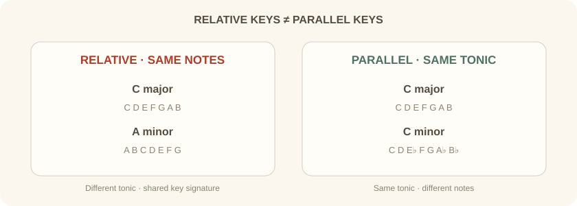

مثال ۱: گام ماژور — Let It Be C ماژور
از The Beatles
تحلیل: نتهای اصلی: C D E F G A B · آکوردهای اصلی: C, G, Am, F — که همگی دیاتونیکِ گام C ماژور هستند.
مبانی نظری تئوری موسیقی — درس سوم
در درس دوم با مفهوم فواصل آشنا شدیم. اکنون با ترکیب فواصل در یک الگوی منظم، به مفهوم گام میرسیم — ستون فقرات هر قطعه موسیقی.
بخش اول
گام به مجموعهای از نتها گفته میشود که به ترتیب ارتفاع (از پایین به بالا یا بالعکس) مرتب شدهاند و بر اساس یک الگوی فاصلهای مشخص از یک نت پایه (Tonic یا Root) ساخته میشوند.
بخش دوم
گامها بر اساس تعداد نتهای تشکیلدهنده به دستههای زیر تقسیم میشوند:
| نام گام | تعداد نت | توضیح |
|---|---|---|
| کروماتیک (Chromatic) | ۱۲ نت | شامل تمام نتهای موجود در اکتاو |
| دیاتونیک (Diatonic) | ۷ نت | گامهای ماژور و مینور (پایه موسیقی غربی) |
| پنتاتونیک (Pentatonic) | ۵ نت | گامهای پنجنتی (بسیار رایج در بلوز، راک، فولک) |
| هگزاتونیک (Hexatonic) | ۶ نت | مانند گام تمامپرده (Whole Tone) |
| اکتاتونیک (Octatonic) | ۸ نت | گامهای هشتنتی (رایج در موسیقی مدرن و جَز) |
در این درس، تمرکز ما بر گامهای دیاتونیک (ماژور و مینور) است، زیرا پایه و اساس تمام مفاهیم بعدی را تشکیل میدهند.
بخش سوم
گام کروماتیک شامل تمام ۱۲ نت در یک اکتاو است که با فاصله نیمپرده (Half Step) از هم جدا شدهاند.
بخش چهارم
گامهای دیاتونیک از ۷ نت تشکیل شدهاند و از ترکیب فواصل تمامپرده (W = Whole Step = 2 نیمپرده) و نیمپرده (H = Half Step = 1 نیمپرده) ساخته میشوند.
گام ماژور مهمترین گام در موسیقی غربی است. فرمول ساخت آن:
(تمام - تمام - نیم - تمام - تمام - تمام - نیم)
| درجه | نت | فاصله از نت قبل |
|---|---|---|
| 1 | C | — |
| 2 | D | W (تمام) |
| 3 | E | W (تمام) |
| 4 | F | H (نیم) |
| 5 | G | W (تمام) |
| 6 | A | W (تمام) |
| 7 | B | W (تمام) |
| 8 | C | H (نیم) |

با همان فرمول (W-W-H-W-W-W-H) از نت G — این گام دارای یک Sharp است.
از نت F — این گام دارای یک Flat است.
بخش پنجم
هر نت در گام، دارای یک درجه (Degree) و یک نام تخصصی است. این نامها در هارمونی و آنالیز موسیقی بسیار حیاتی هستند.
| درجه | نام تخصصی | نقش در گام |
|---|---|---|
| 1 | Tonic (تونیک) | نت پایه، نقطه آرامش و خانه |
| 2 | Supertonic (سوپرتونیک) | یک پرده بالاتر از تونیک |
| 3 | Mediant (مدیانت) | وسط تونیک و دومینانت، تعیینکننده ماژور یا مینور بودن گام |
| 4 | Subdominant (زیرنمایان) | قرینه دومینانت نسبت به تونیک |
| 5 | Dominant (نمایان / دومینانت) | مهمترین نت بعد از تونیک، بیشترین کشش به سمت تونیک |
| 6 | Submediant (زیرمیانی) | — |
| 7 | Leading Tone (نت پیشرو) | نیمپرده زیر تونیک، کشش شدید به سمت تونیک |
بخش ششم
فرمول گام مینور طبیعی، یکی از شکلهای پایهٔ گام مینور است:
برای ایجاد کشش به سمت تونیک (مانند Leading Tone در ماژور)، درجه ۷ را نیمپرده بالا میبریم. فرمول:
برای حل مشکل سوم افزوده در ملودینویسی، هم درجه ۶ و هم درجه ۷ بالا میروند (فقط در مسیر صعودی).

بخش هفتم
| گام | احساس غالب | کاربرد متداول |
|---|---|---|
| ماژور | در برخی بافتها روشن یا پرانرژی برداشت میشود | پاپ، راک کلاسیک، موسیقی حماسی روشن |
| مینور طبیعی | در برخی بافتها جدی یا تأملبرانگیز برداشت میشود | بالادها، موسیقی غمگین سینمایی، فولک |
| مینور هارمونیک | دراماتیک، شرقی، پرتنش | متال نئوکلاسیک، گوتیک، موسیقی عربی/فلامنکو |
| مینور ملودیک | پیچیده، جَز-محور، خاص | جَز، پراگرسیو متال، موسیقی مدرن |
بخش هشتم
دو گام نسبی، دقیقا نتهای یکسانی دارند اما تونیک (نت پایه) متفاوتی دارند.
از تونیک گام ماژور، سه نیمپرده (یک سوم کوچک) به پایین بروید.
از تونیک گام مینور، سه نیمپرده به بالا بروید.

بخش نهم
گامهای موازی، تونیک یکسانی دارند اما ماژور یا مینور بودن آنها متفاوت است.
بخش دهم
تحلیل: نتهای اصلی: C D E F G A B · آکوردهای اصلی: C, G, Am, F — که همگی دیاتونیکِ گام C ماژور هستند.
تحلیل: نتهای اصلی: A B C D E F G · ریف ماندولین اصلی تماما بر اساس نتهای گام A مینور است.
تحلیل: فرمول D مینور طبیعی: D E F G A B♭ C. با بالا بردن درجهٔ هفتم، C به ♯C تبدیل میشود و فرمول D مینور هارمونیک به دست میآید: D E F G A B♭ C♯.
تحلیل: استفاده گسترده از فاصله دوم افزوده (Augmented Second) بین درجه ۶ و ۷، حس کلاسیک/باروک را به متال میآورد.
تحلیل: در مینور ملودیک کلاسیک، درجههای ششم و هفتم هنگام صعود بالا میروند: F G A♭ B♭ C D E F. در نزول معمولا شکل مینور طبیعی به کار میرود: F E♭ D♭ C B♭ A♭ G F. در جَز، شکل صعودی در هر دو جهت حفظ میشود.
بخش یازدهم
تقریبا تمام DAWهای مدرن (FL Studio, Ableton Live, Logic Pro, Cubase, Bitwig) قابلیتی به نام Scale Highlighting یا Scale Locking دارند.
جلوگیری از نتهای فالش و خارج از گام · افزایش سرعت نوشتن ملودی و کنترملودی · امکان تمرکز بر روی ریتم و احساس به جای تئوری.
اکثر DAWها (مخصوصا Ableton و FL Studio) اجازه میدهند که وقتی یک آکورد قرار میدهید، Piano Roll به صورت خودکار گام آن آکورد را تشخیص داده و نتهای مجاز را نمایش دهد.
بخش دوازدهم
پرسش چرا سه نوع مینور داریم؟ آیا نمیتوان فقط از مینور طبیعی استفاده کرد؟
پاسخ هر سه شکل کاربردهای رایجی دارند. در مینور هارمونیک، درجهٔ هفتم بالا میرود تا کشش دومینانت به تونیک در هارمونی مینور تقویت شود. مینور ملودیک کلاسیک درجات ششم و هفتم را هنگام صعود بالا میبرد؛ در سنت جَز، شکل صعودی در هر دو جهت به کار میرود. این الگوها امکانهای آهنگسازیاند و بهتنهایی احساس مشخصی را تضمین نمیکنند.
پرسش آیا باید تمام ۱۲ گام ماژور و ۱۲ گام مینور را حفظ کنم؟
پاسخ نیازی به حفظ کردن طوطیوار نیست. با یادگیری دایره پنجمها (Circle of Fifths) که در درس بعدی پوشش داده میشود، منطق پشت تمام گامها را درک خواهید کرد. اما برای شروع، تسلط بر گامهای C ماژور، G ماژور، F ماژور و مینورهای نسبی آنها کافی است.
پرسش چرا در مینور ملودیک جَز، گام در نزول تغییر نمیکند؟
پاسخ در سنت جَز، شکل صعودی مینور ملودیک در هر دو جهت به کار میرود. این کاربرد با شکل رایج در آموزش کلاسیک فرق دارد؛ انتخاب شکل گام به زبان موسیقایی و کاربرد هارمونیک بستگی دارد.
پرسش آیا یک قطعه میتواند در دو گام همزمان باشد؟
پاسخ بله. این پدیده Bitonality یا Polytonality نامیده میشود و در موسیقی مدرن، پراگرسیو و تجربی رایج است. اما در موسیقی پاپ، راک و سینمایی استاندارد، معمولا یک گام غالب است.
بخش سیزدهم
گامهای زیر را با استفاده از فرمولهای ارائه شده بسازید و نتهای آنها را بنویسید:
برای هر یک از گامهای زیر، گام نسبی (ماژور یا مینور) را پیدا کنید:
آهنگ «Hotel California» از Eagles را گوش دهید. گام اصلی قطعه چیست؟ آیا در سولوی پایانی از گام مینور هارمونیک استفاده شده است؟
در DAW خود، یک توالی آکورد ساده بسازید: Am - F - C - G — Scale را روی A Minor Natural قفل کنید و یک ملودی ۸ میزانی بنویسید که فقط از نتهای هایلایت شده استفاده کند.